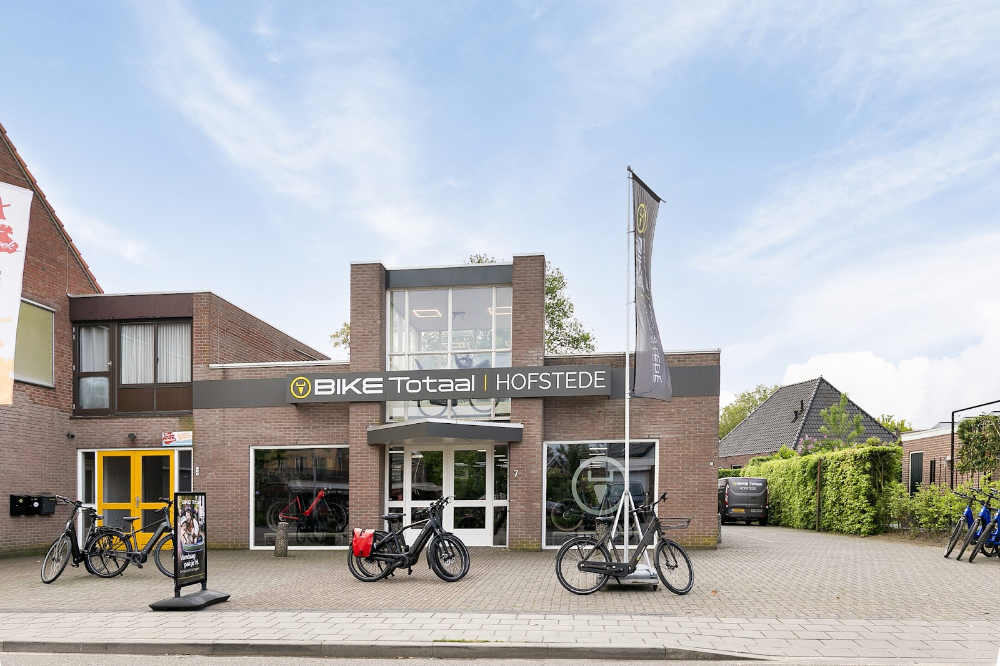
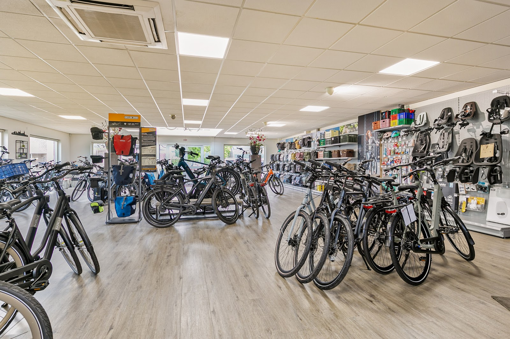
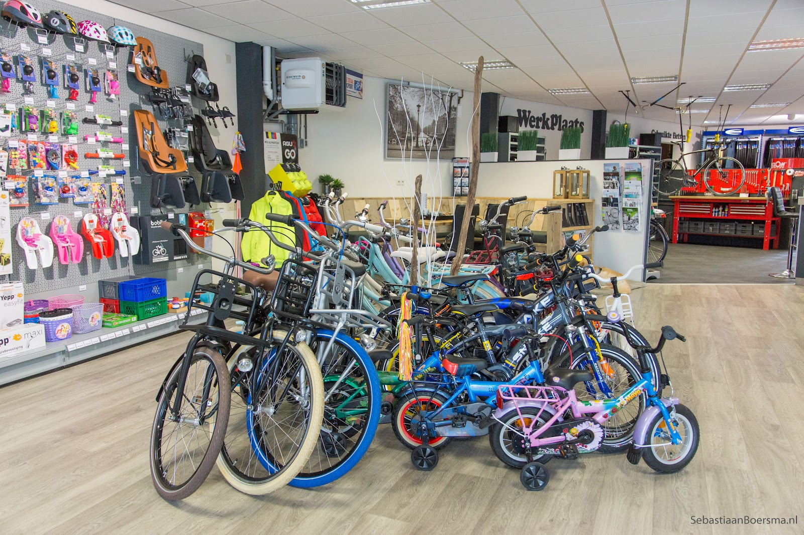
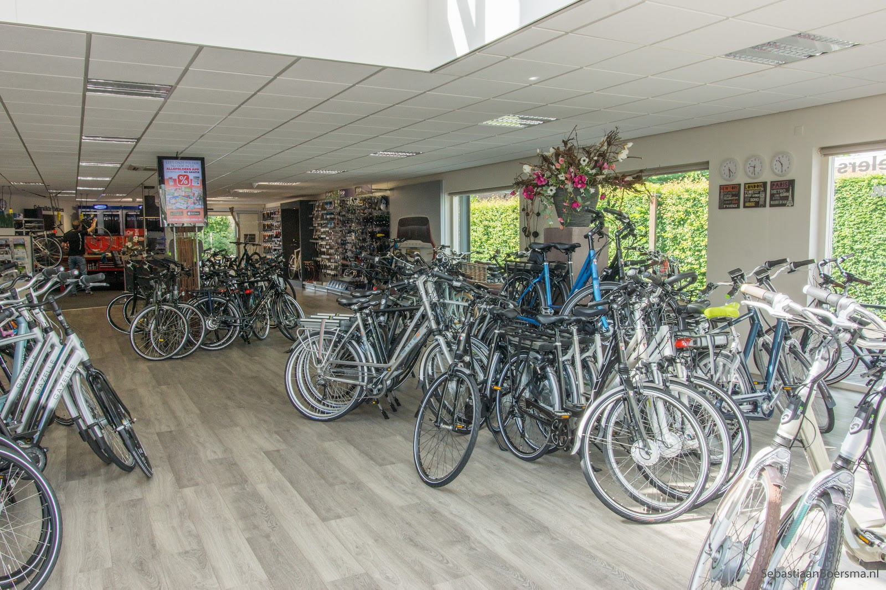
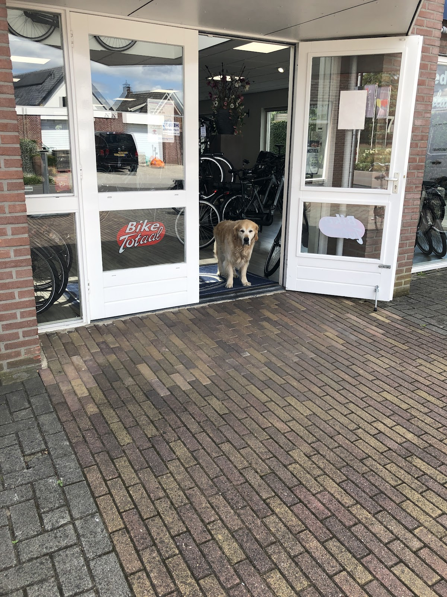

Fietsenwinkel en werkplaats, Ruurloseweg 7A in Groenlo
Verstand van fietsen. In Groenlo.
Een nieuwe fiets of e-bike uitzoeken, uw fiets laten nakijken of snel geholpen worden met een lekke band. U loopt gewoon binnen.
Open dinsdag tot en met vrijdag 9:00 tot 18:00, zaterdag 9:00 tot 17:00.

Pech onderweg in de Achterhoek?
Op vakantie, op de camping of gewoon onderweg en ineens een lekke band of een rem die het niet meer doet. Kom langs of bel even, dan kijken we wat er kan.
Bel de werkplaats0544 488 695"Sta ik op de camping met een lekke band. Kom ik bij de fietsenmaker om te laten repareren. Binnen 10 minuten was de band weer gerepareerd. Wat een super service!!!!! Het bestaat nog!!!!!"
"Zijn hier op vakantie en had pech met mijn rem langs deze fietswinkel gegaan en probleem besproken. Werd direct geholpen met een leenfiets en kon de andere dag mijn fiets weer ophalen dus prima service en vriendelijk te woord gestaan. Dank voor de goede service"
Een ruime winkel vol fietsen.
In de showroom staan stadsfietsen, elektrische fietsen en kinderfietsen naast elkaar, zodat u rustig kunt vergelijken en een proefrit kunt maken.
Langs de wand vindt u alles om de fiets heen: fietstassen, kinderzitjes, helmen, manden en kratten.



De werkplaats zit achter in de winkel.
Voor een servicebeurt, een nieuwe band, remmen die niet goed meer pakken of een e-bike die nagekeken moet worden. Breng uw fiets binnen tijdens openingstijden of bel om te overleggen.
- Onderhoud en servicebeurtgewone fiets en e-bike
- Reparatiebanden, remmen en meer
- Pech onderweglangskomen of bellen
Net de elektrische fiets van mijn vrouw weer opgehaald na een (tweede) servicebeurt. Normaal zou deze beurt 49 euro hebben gekost. Maar omdat er als gevolg van ziekte van mijn vrouw bijzonder weinig mee was gefietst, werden er geen kosten in rekening gebracht! Wat een geweldige service!!!
Wat klanten zeggen.
4,9gemiddeld uit 49 Google-reviews
"Uitstekende service en vriendelijke mensen. Op vakantie hier met de fiets en bandje laten vernieuwen. Werd direct geholpen en binnen 10 minuten weer op de fiets. Goed bezig hier !! Bedankt."
"Ik ben goed geholpen en ben erg blij met mijn nieuwe fiets!"
Kom langs aan de Ruurloseweg.
Openingstijden
| Maandag | gesloten |
| Dinsdag | 9:00 tot 18:00 |
| Woensdag | 9:00 tot 18:00 |
| Donderdag | 9:00 tot 18:00 |
| Vrijdag | 9:00 tot 18:00 |
| Zaterdag | 9:00 tot 17:00 |
| Zondag | gesloten |
